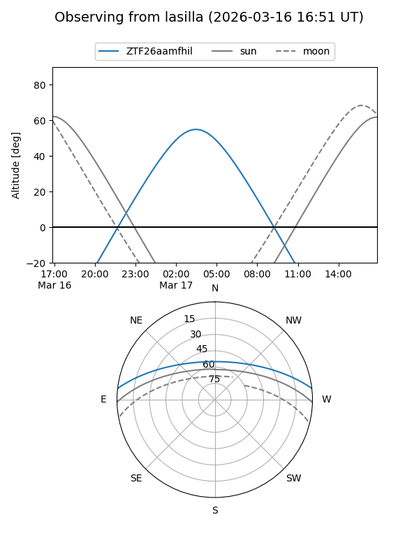
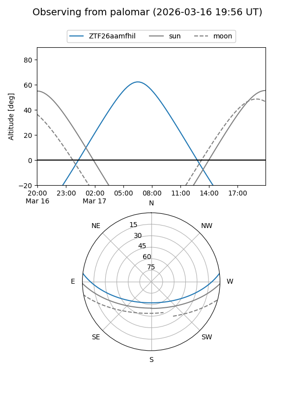

ZTF26aamfhil
Target ZTF26aamfhil at 2026-03-17 08:05
Aliases and brokers:
FINK: link
Lasair: link
ALeRCE: link
alt names
ZTF26aamfhil (ztf,fink_ztf)
Coordinates:
equatorial (ra, dec) = 155.6225,+5.90111
equatorial (HMS+DMS) = 10:22:29.40,+05:54:03.99
galactic (l, b) = (237.0602,+48.73616)
Flags:
Photometry:
last ztfg=19.41
1 ztfg detections
Lightcurve
Visibility


Additional plots